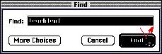

|
ClickingClicking has two components: pushing down on the mouse button and then quickly releasing it while the mouse remains stationary. (If the mouse moves between button down and button up, dragging--not clicking--is what happens.) Some uses of clicking are to select an object, to move an insertion point, to activate a button, and to turn on a control such as a checkbox. The effect of clicking should be immediate and evident. If the function of the click is to cause an action (such as clicking a button), the selection is made when the button is pressed, and the action takes place when the button is released.Figure 10-4 shows the action of clicking a button.  |